Elena Daunytė
violoncellista e vocalist
Violoncellista e vocalist lituana che porta il nome del suo paese in Europa e oltre — vincitrice di numerosi concorsi internazionali e del Grand Prix, membro dell'ensemble „Regnum Musicale“ e musicista in cui la tradizione classica incontra l'improvvisazione.

Chi sono
La musica come cammino, non come meta
LeggiChiudi
La musica come cammino, non come meta
Elena Daunytė è vincitrice di numerosi concorsi internazionali e del Grand Prix, dal 2021 violoncellista del Quartetto Čiurlionis della Filarmonica Nazionale Lituana e membro dell'ensemble familiare „Regnum Musicale“. Dal 2023 insegna all’Accademia Lituana di Musica e Teatro, nelle classi di quartetto d’archi e musica da camera. Come solista e musicista da camera si è esibita in concorsi, festival e masterclass la cui geografia spazia da Lettonia, Germania, Svizzera, Croazia, Russia, Austria, Paesi Bassi, Italia, Spagna, Ungheria e Regno Unito fino a Hong Kong, Shanghai e Stati Uniti.
Come solista ha suonato con l'Orchestra da Camera Lituana, l'Orchestra Sinfonica Nazionale Lituana, l'Orchestra Sinfonica di Stato Lituana, le orchestre di Riga, Kaunas e dell'Accademia di Musica e Teatro della Lituania, nonché con le orchestre del Royal College of Music e di Halifax, sotto la direzione di Andrzej Kosendiak, Jonathan Berman, Modestas Pitrėnas, Sergei Krylov, Saulius Sondeckis, Vilmantas Kaliūnas, Martynas Staškus, Nicholas Simpson e Clark Rundell.
È regolarmente invitata a eseguire parti soliste di violoncello ai festival „Vilnius“ e „Gaida“ insieme all'Orchestra da Camera Lituana e all'Orchestra Sinfonica Nazionale Lituana, e il suo percorso artistico è stato sostenuto dalla Fondazione S. Karosas, dal Fondo di Sostegno ai Musicisti, da Rotary International e dai club Rotary di Perkūnas e Vilnius, in collaborazione con il Consiglio Lituano per la Cultura.
Da alcuni anni Elena studia anche canto con il professor Vladimir Prudnikov e inserisce brani vocali nei suoi programmi di concerto. Sperimenta l'unione di violoncello e voce, alla ricerca di nuove armonie e possibilità per la sintesi dei due strumenti.
„Ciò che conta di più è la crescita — e la gioia più profonda che nasce dal processo stesso del migliorarsi.“
Percorso
Formazione e crescita
LeggiChiudi
Formazione e crescita
-
Scuola d'Arte M. K. Čiurlionis
Le fondamenta della sua formazione musicale — la base su cui è cresciuta una carriera internazionale.
-
Royal Northern College of Music
Studi in una delle accademie musicali più prestigiose d'Europa.
-
Accademia di Musica e Teatro della Lituania
Studi avanzati di violoncello a Vilnius, rappresentando attivamente l'accademia in eventi nazionali e internazionali.
-
Masterclass
Una crescita costante accanto a violoncellisti di fama mondiale.
Musica propria
„Laisvės glėby“ (Nell’abbraccio della libertà) · videoclip musicale · sua composizione per voce e violoncello · Bezdonys, 2020

„Ryto ugnis“ (Fuoco del mattino) · videoclip musicale · sua composizione per voce e violoncello · collina fortificata di Buivydai · LRT · KLIPVID 2021
Da solista con l'orchestra
Solista Elena Daunytė · direttore Andrzej Kosendiak (Polonia) · Orchestra da Camera Lituana · Filarmonica Nazionale Lituana, 2022
Solista Elena Daunytė · direttore Jonathan Berman (Regno Unito) · Orchestra Sinfonica Nazionale Lituana · Filarmonica Nazionale Lituana, 2023
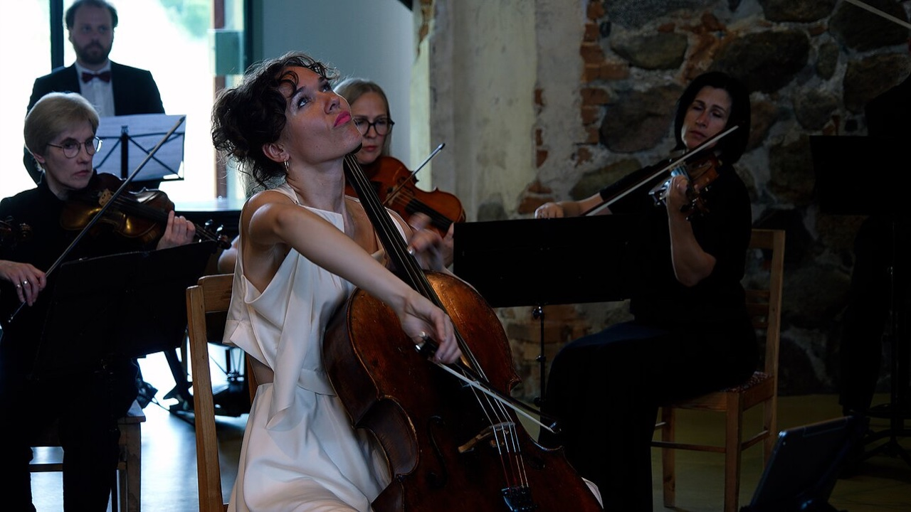
Elena Daunytė (violoncello) · Orchestra da camera di Šiauliai „Camerata Solaris“ (direttore artistico e direttore Vilhelmas Čepinskis) · Maniero di Paliesius, 2025 · LRT · (dal minuto 34:25)
Voce
Gioacchino Rossini · „Canzonetta Spagnuola (En medio a mis colores)“ · canta Elena Daunytė · con le sorelle Joana Daunytė (arpa) e Kotryna Ugnė Daunytė (violino) · Municipio di Vilnius, 7 aprile 2024
Giedrius Kuprevičius · la ballata „Vilniaus gatvelės“ (Vie di Vilnius) per violoncello, voce e pianoforte, adattata per lei · Elena Daunytė (violoncello e voce), Milda Umbrusevičiūtė (pianoforte) · Concerto dei vincitori del Concorso vocale internazionale Nehama Lifshitz · Municipio di Vilnius, 2022
Poesia
Įkvėpime
Kai įkvėpi – nesulaikai juk laiko
Pulsuoti pradeda širdis laikinume
Rimties ritme ji pagreitį išlaiko
Ir sulėtėja tik ramiam iškvėpime.
Bangavime srovės patiri esatį
Iš lėto krūtine laiku iries
Ramiam kvėpavime randi jaukiausią prieglobstį
Savęs nebebijodamas nė kiek.
Įkvėpime – akimirkos jaukumas gimsta
Išsyk plevendamas Kūrėjo delnuose
Iškvėpime paleidi į Pasaulio kismą
Tai, ką įkvėpęs kurstei savyje.
„33 įkvėpimai“ (33 ispirazioni) — raccolta di poesie in lituano. Pubblicata da Slinktys il 6 marzo 2026; presentazione l’8 marzo al Green Hall 2.
Poesie pubblicate nella rivista „Naujoji Romuva“, giugno 2026.
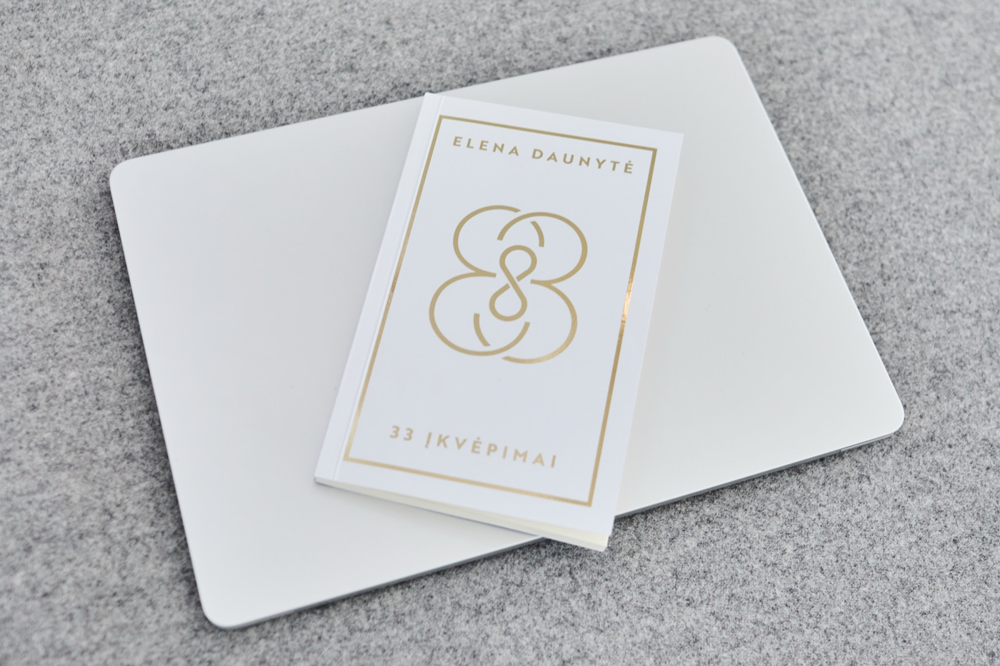
Foto della presentazioneChiudi
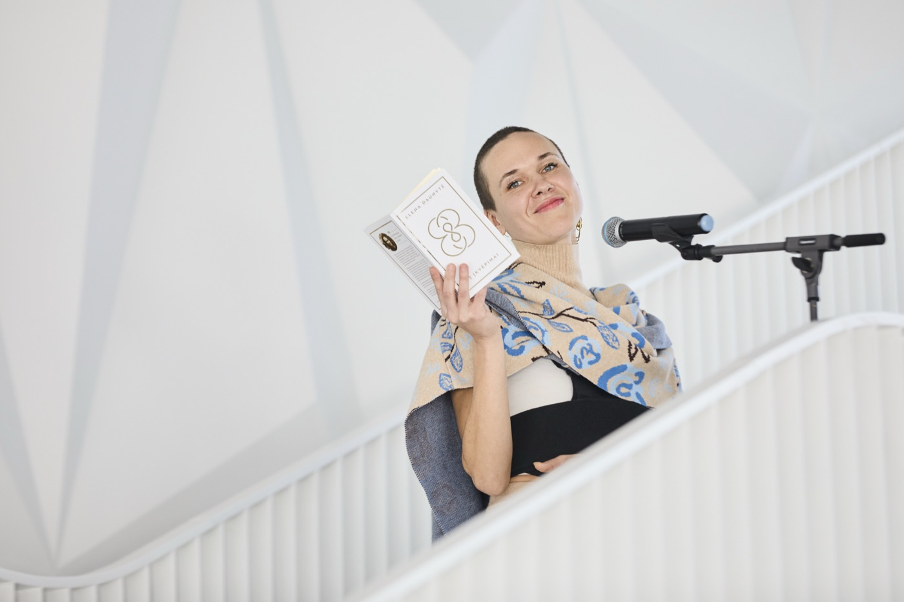
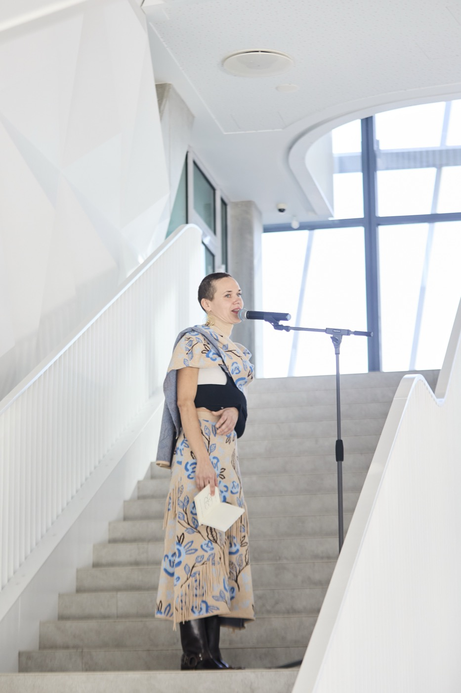
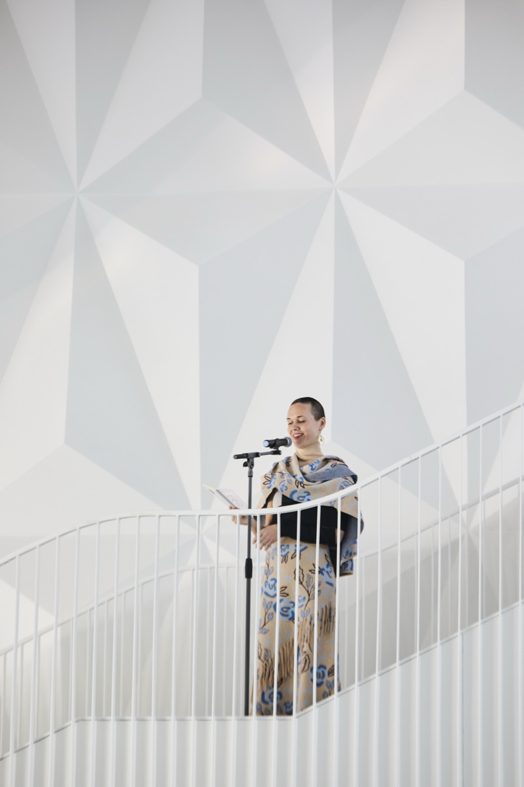
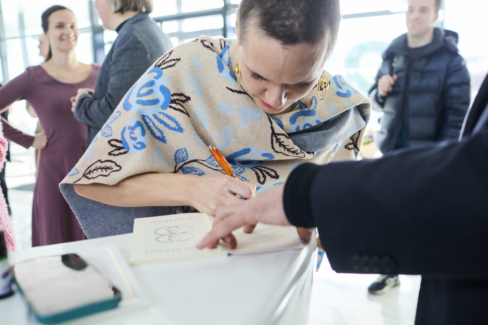
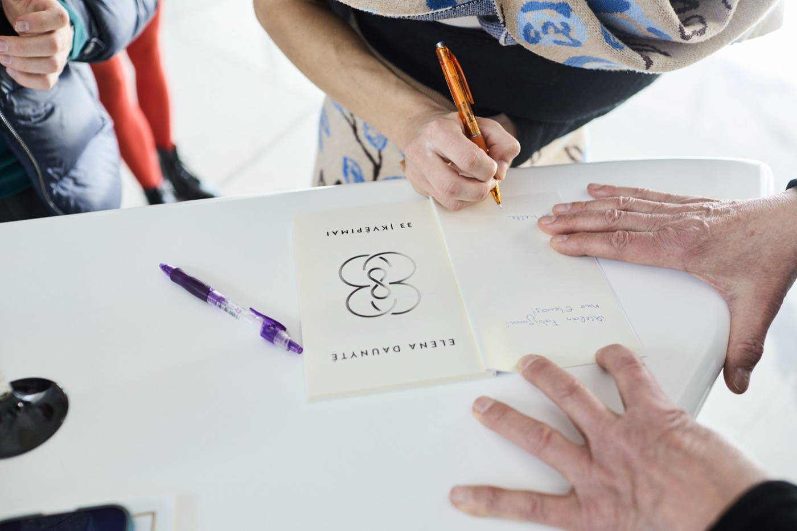
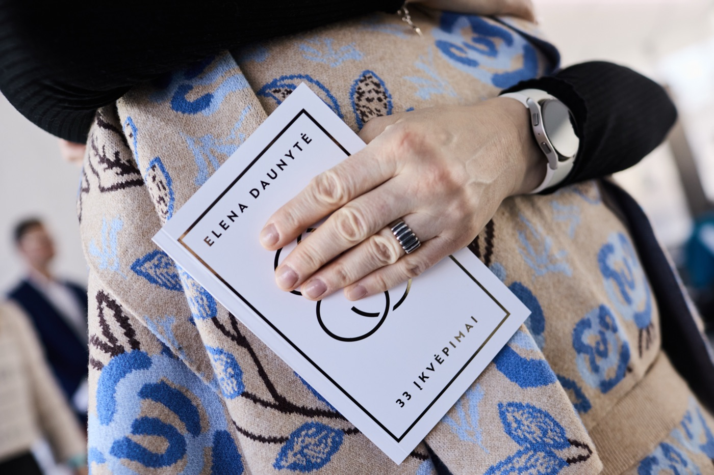
Fotografie — Gintaras Jonaitis
„33 įkvėpimai“ (33 Ispirazioni) · un’esperienza di poesia, musica e respirazione consapevole · Elena Daunytė (poesia), Ninah Sol (respirazione consapevole) · Centro culturale „Agila“ di Nida, 2 luglio 2026
Informazioni sull’eventoChiudi
Ogni poesia comincia con un respiro.
„33 įkvėpimai“ è un’esperienza in cui si incontrano tre modi di tornare a sé: la parola poetica, la musica e la respirazione consapevole. La serata nasce dal libro di Elena Daunytė „33 įkvėpimai“ — trentatré poesie in tre strofe, nate dal silenzio, dal vissuto e dai cambiamenti.
Elena legge le proprie poesie, mentre Ninah Sol guida la pratica di respirazione consapevole, invitando con delicatezza e in tutta sicurezza a sentire il respiro, rallentare e lasciarsi andare. Una musica quieta, scelta appositamente, avvolge l’intera esperienza. Non occorre sapere né aver imparato nulla in anticipo. Basta sedersi, chiudere gli occhi e lasciarsi portare dalla parola, dal suono e dal respiro. Il respiro diventa ritmo, la musica un sostegno e la poesia uno specchio in cui ciascuno può riconoscere qualcosa di proprio.
È uno spazio per fermarsi e accorgersi che a volte basta un solo respiro consapevole perché la giornata prenda un altro colore.
- Elena Daunytė — poesia e lettura
- Ninah Sol — respirazione consapevole
Apri il cuore al flusso del tempo, del respiro, della musica e della parola!
Insieme
Ensemble e collaborazioni
LeggiChiudi
Ensemble e collaborazioni
Regnum Musicale
Ensemble familiare fondato con le sorelle, che prende il nome dall'organizzazione culturale del padre — un'emozione condivisa, un volo del sentimento sul palco.
Festival „Vilnius“ e „Gaida“
Regolarmente invitata a eseguire parti soliste di violoncello insieme all'Orchestra da Camera Lituana e all'Orchestra Sinfonica Nazionale Lituana.
Quartetto Čiurlionis
Una collaborazione cameristica che unisce repertorio classico e profonda intesa musicale.
Rassegna stampa
Sulla stampa
LeggiChiudi
Sulla stampa
- „Be kaukių“ (Senza maschere) · il dubbio è inseparabile dall’intero percorso di un musicista LRT Radioteka · 2023
- „Creare un miracolo reciproco“ · prima del concerto „Prancūzų muzikos šedevrai III“ Lietuvos muzikų sąjunga · 2023
- „Un bouquet di capolavori francesi per il pubblico della Filarmonica“ Lrytas · 2023 · recensione
- „La violoncellista Elena Daunytė — sostenitrice dell’estremo“ Žmonės.lt · 15min · 2022
- „Fare musica con le sorelle — un’emozione condivisa e un volo del sentimento“ Lietuvos muzikų sąjunga · 2020
- „Se avessi avuto un padre, chissà se sarebbe rimasta in secondo piano la musica o la letteratura“ Lrytas · 2018
- „Una giovane violoncellista di talento attribuisce ogni percento del suo successo alla sincerità“ Bernardinai.lt · 2018
- La galleria di Elena Daunytė — foto, video e audio Lietuvos muzikų sąjunga
Riconoscimenti
Premi e riconoscimenti
LeggiChiudi
Premi e riconoscimenti
Elena è vincitrice di numerosi concorsi internazionali e del Grand Prix. Per la sua intensa attività concertistica e concorsuale a promozione del nome della Lituania all'estero, ha ricevuto più volte attestati di merito dai Presidenti della Repubblica di Lituania, e per i suoi risultati musicali le è stato conferito il Premio della Regina Morta.
- Status di creatore d’arte — conferito il 20 giugno 2020 con decisione del ministro della Cultura Mindaugas Kvietkauskas
- Grand Prix in concorsi internazionali di violoncello
- Attestato del Presidente Valdas Adamkus per la promozione del nome della Lituania nel mondo
- Attestato della Presidentessa Dalia Grybauskaitė per l'intensa attività artistica
- Premio della Regina Morta per i risultati musicali
- Vincitrice di numerosi concorsi internazionali di violoncello
Galleria fotografica
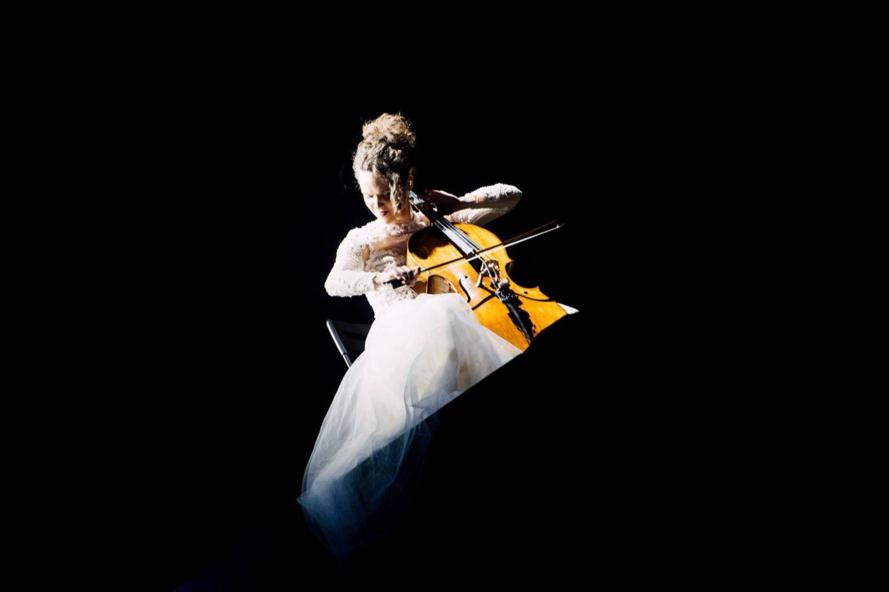
Fotografia — Gabrielius Jauniškis · Žalgiris Arena, marzo 2017
Vedi tutte le fotografieChiudi
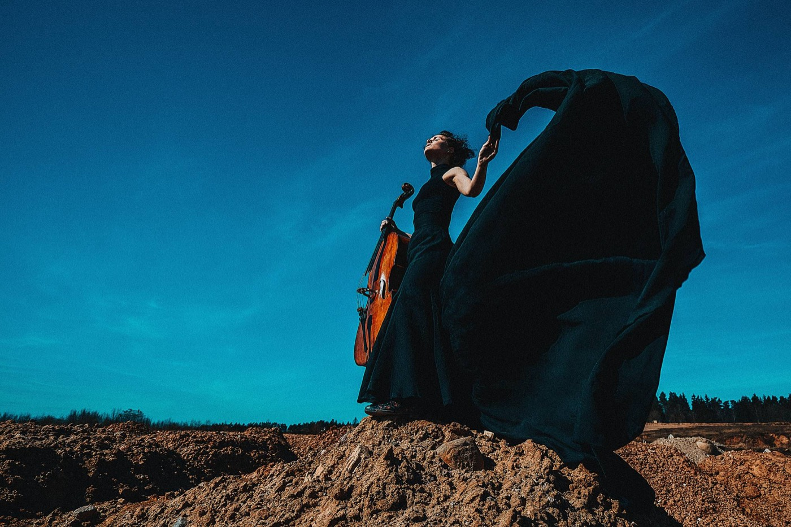
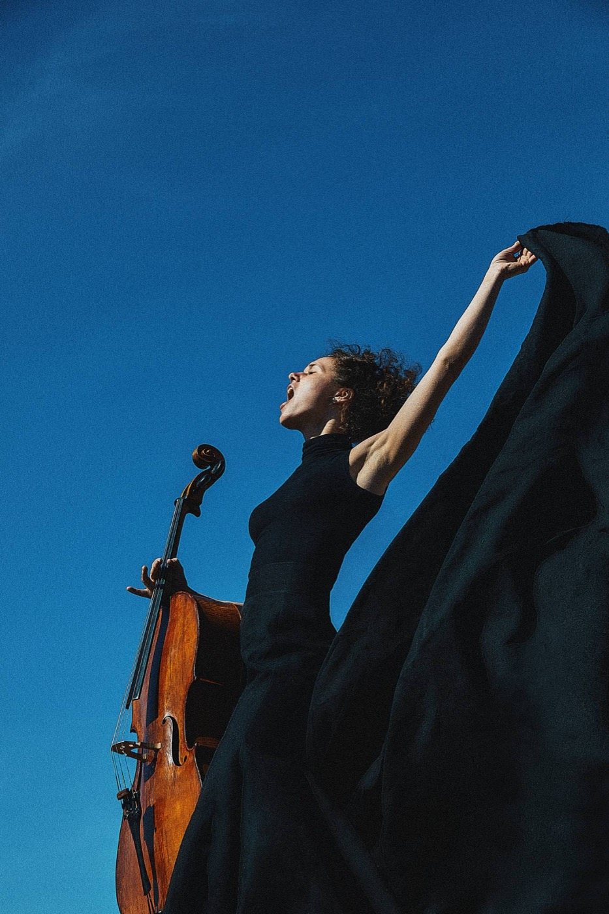
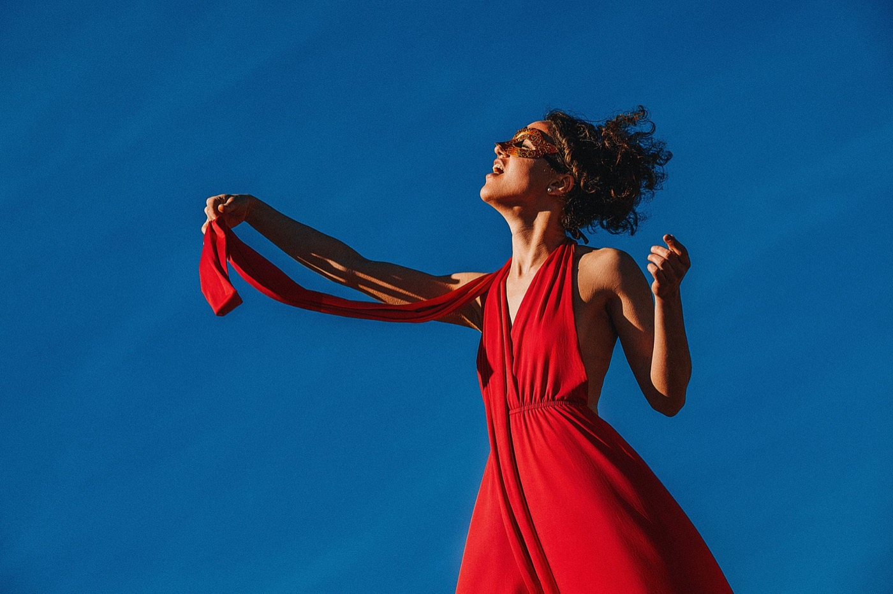
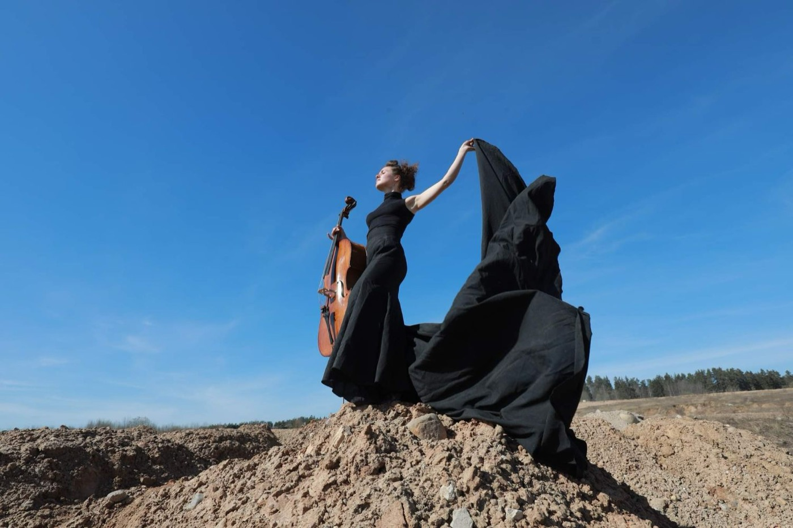
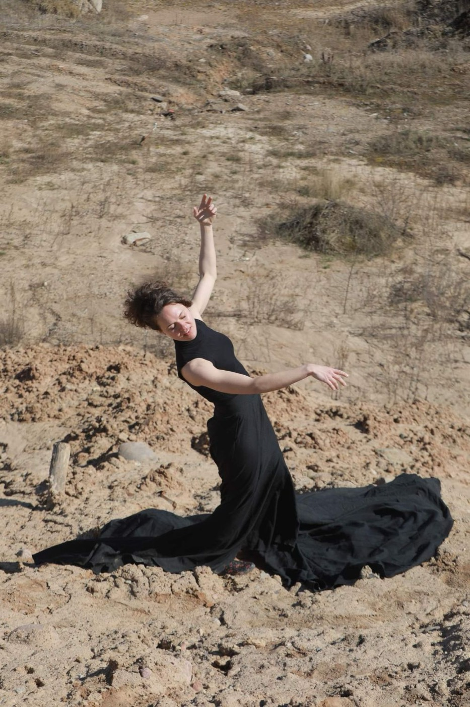
Fotografie — Gintaras Jonaitis, „Karantino provokacijos“ (Provocazioni della quarantena), primavera 2020
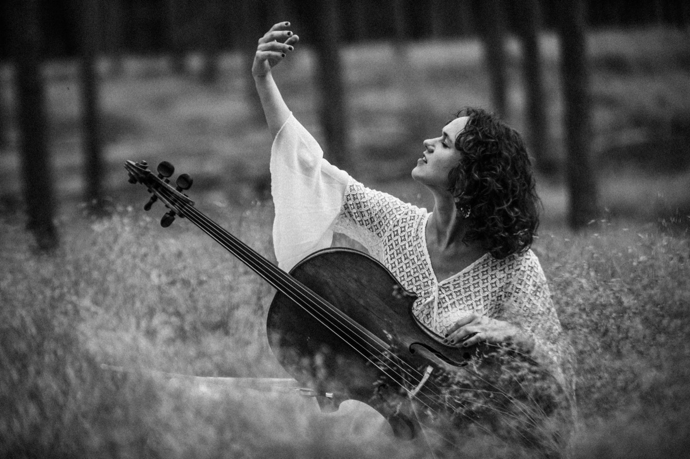
Fotografia — Gintaras Jonaitis, „Karantino provokacijos“ (Provocazioni della quarantena), giugno 2020
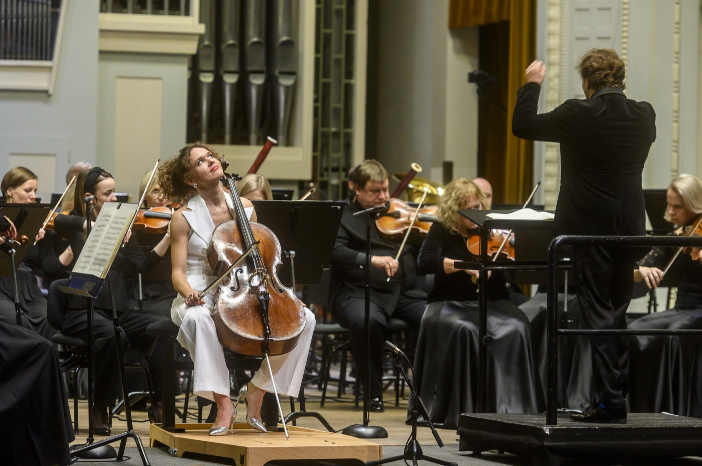
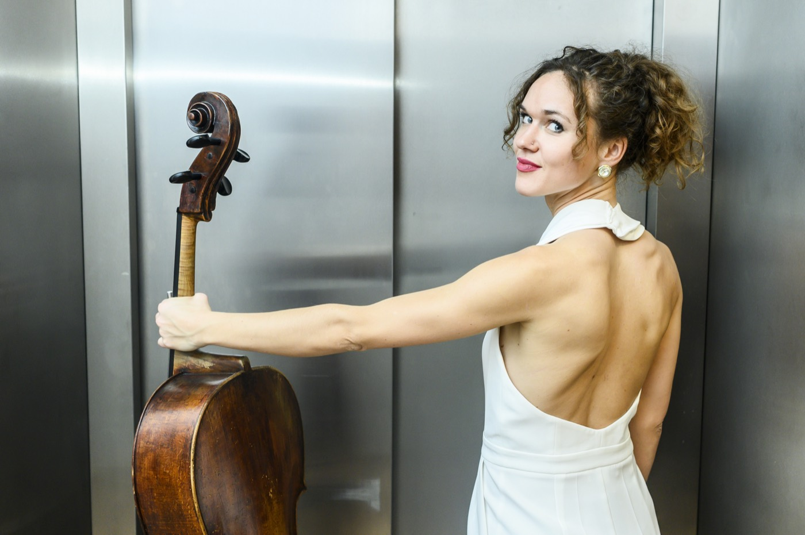
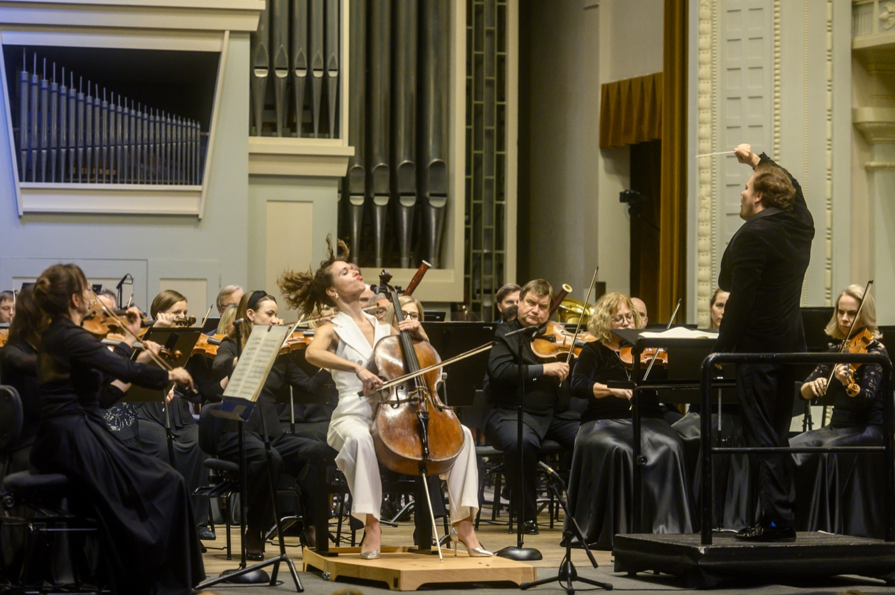
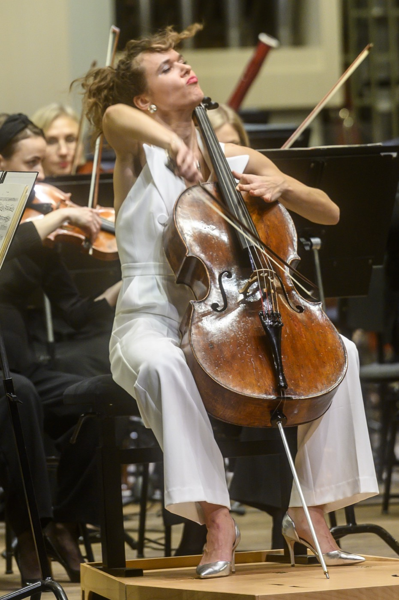
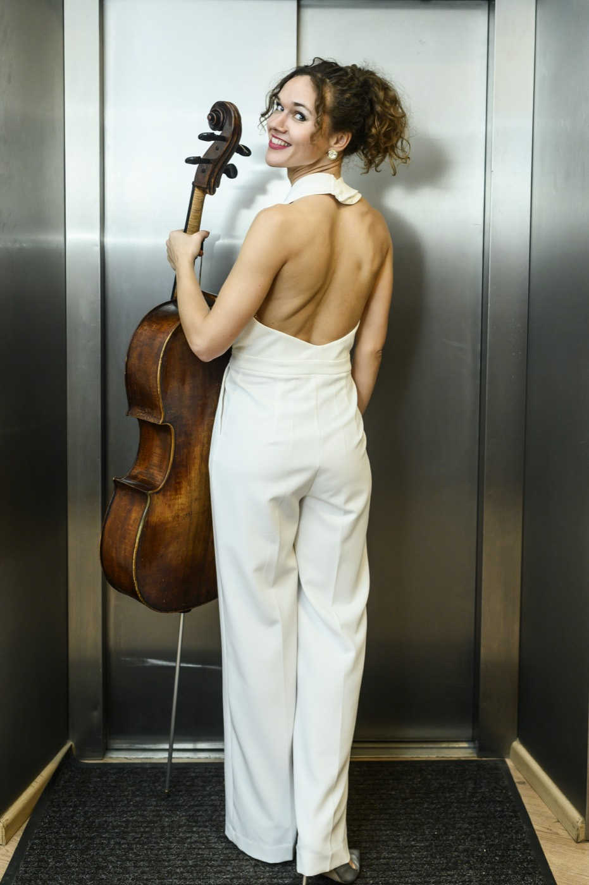
Fotografie — Dmitrijus Matvejevas · Filarmonica Nazionale Lituana, 11 novembre 2023
Contattami
Concerti, collaborazioni o richieste stampa — sono sempre felice di ricevere un messaggio.